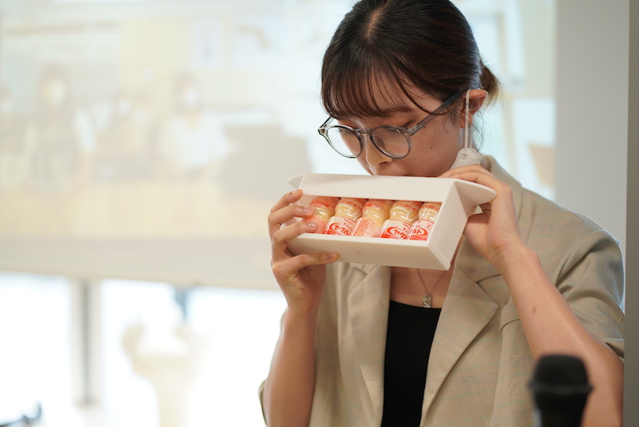

Design for Others
Ideation and Test(制作期間)
まずは、グループでどのような問題を解決する製品を作るか確定してください。
（デジタルファブリケーションで作れるモノに限る、販売されているものと組み合わせるのは自由）
次回までに、各個人でグループで決めた製品プロトタイプ（完成度は高くなくていい）を作ってください。
この段階のプロトタイプレベル感
各グループ人数分のバリエーションができるはずです。
作れないものは製品プロトタイプとして認められません。（自分の環境、技術の中で作れるものにしてください）
ファブラボにない素材などは自分で購入してください。
できるだけグループで作ってきた実物を触りながら、それらを評価しもっとこうしたらいいのではないか、検討してください。
最終的には、機能するレベルの製品プロトタイプをデジファブを利用して制作してください。
Assignment（指定日までの提出）
機能するレベルのプロトタイプをデジファブを利用して作成し、下記の内容をHPに上げておいてください。
クオリティのレベル感は例の写真を参考にしてください。
あくまで目指すクオリティの参考なので、
思ったクオリティにできなくても完成させ、HPにあげてください。
今回の課題は成績で大きな割合をしてめているので、HPにアップされていないと成績に大きな影響が出ます。
自分達が取り組むことにした問題の説明（スケッチなども含める）
最終的に自分が作った製品プロトタイプの写真や動画(必ず使っているところを撮影する)
説明
使用機材
同じ班のメンバーのDesign for Othersのページへのリンク
例（到達して欲しいレベル感）
■ZoomでVideoオンを要求された時の最後の抵抗
使用機材：3Dプリンター
■ヤクルトを５本パックのまま飲むホルダー
使用機材：3Dプリンター

「椿の花咲く頃」第6話
シーン１
,
シーン2
より洞察
■zoom中だからノックしないで
使用機材：レーザーカッター、UVプリンター
UVプリンターを使いたい人へ
UVプリンターフォーマット
(VersaUV LEF-12i)用のaiファイル